Follow all the events
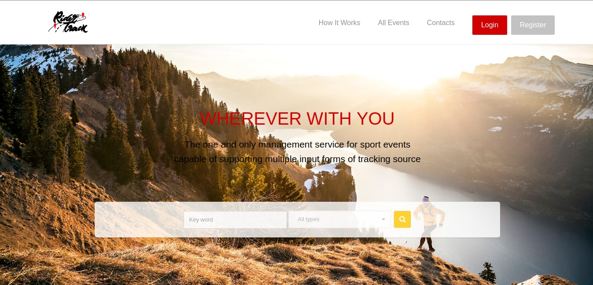
See the
list of the events hosted in RiderTrack just by clicking on the "All events" button or using the search box!
Search for a specific event
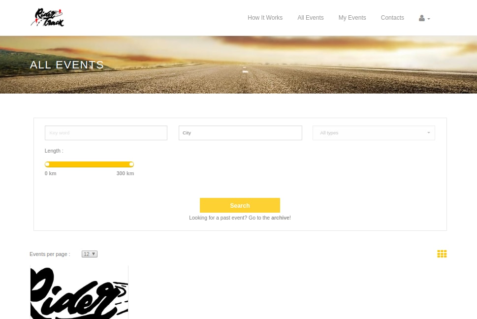
Search for
specific event(s) using the search box that you can find in the home page or in the "All events" page!
You can filter all the future events by a keyword, the city and the type of the events.
You can also filter them by length. Using the default one (0 to 300 km) gives you all the events, even the ones longer
than 300 km.
Once the event has finished it is put in archive which can be accessed from "All events" page by clicking archive just below the search box
Search details for a specific event
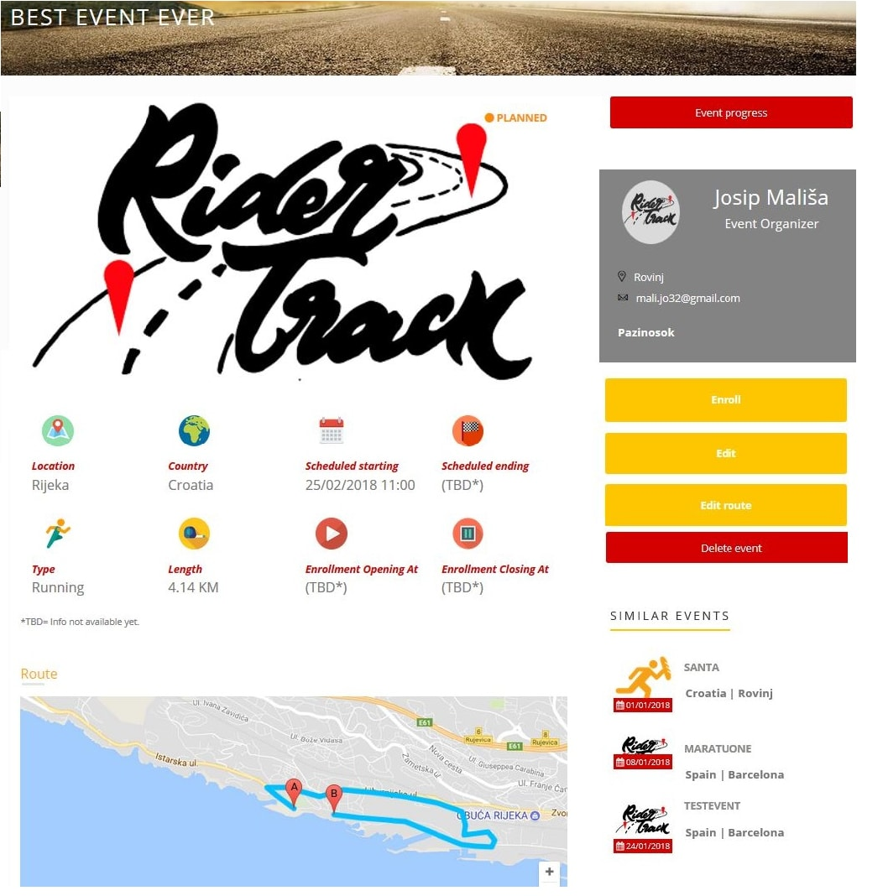
You can open the event detail page in several ways, just clicking on the events boxes:
- From the "Home" page, in the upcoming events section;
- From the footer, in the next 3 events section;
- From the "All events" page by clicking on specific event
Event route and live progress
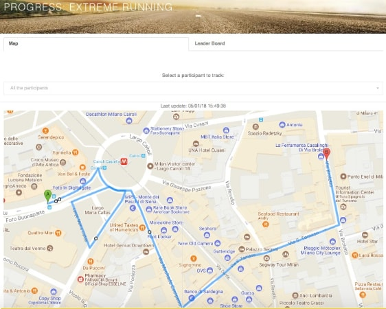
Once the event organizer has set the route for the event, you can access the map page from the button in the event detail
page.
When the event starts, you can follow an event from this page. You will see markers of all the participants and
using the dropdown you can select the one to track.
If you click on the marker, you will see the name and the time of the last position sent.
You can also see the live leaderboard, clicking on the appropriate tab button.
Both map and leaderboard are automatically refreshed and you do not need to do it explicitly. You always see the
most updated information.
Register and login
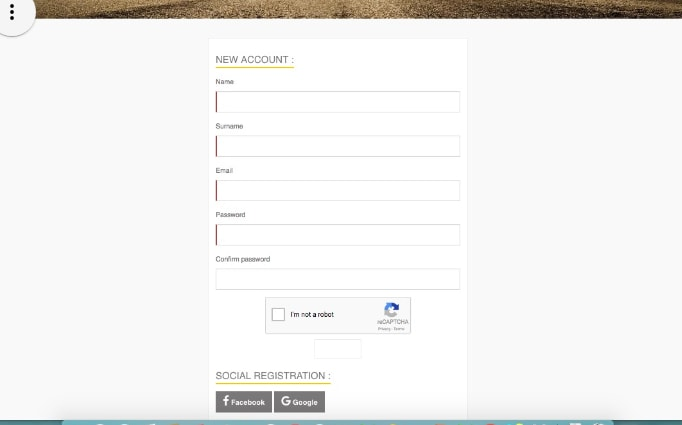
Firstly, if you want to participate in an event you have to register on the RiderTrack system.
By clicking on the register tab and then filling the form or registering thru social networks you are registered on the RiderTrack system.
My events
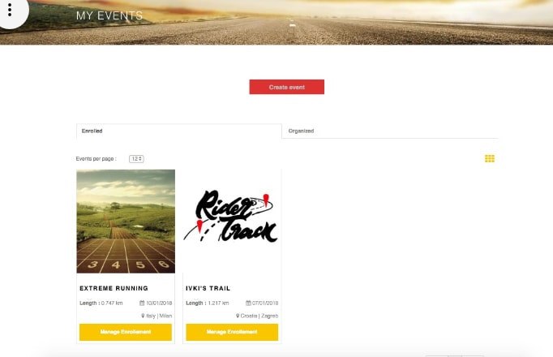
After registration or after signing into RiderTrack user is redirected to "my events" page where all the events in he/she is a part of are visible.
Preview of the "my events" page is on the right.
Enrollment to event
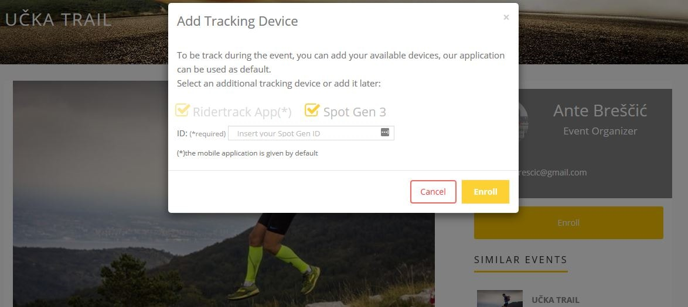
If an user wants to participate in an event actively, he/she has to enroll to event.
The enrollment is done by clicking on the event of which he/she wants to be part of.
Afterwards, clicking the enroll button on "event details" page the window appears.
In that window participant has to choose which tracking device he/she is going to use for tracking purposes during the race.
Mobile app for tracking
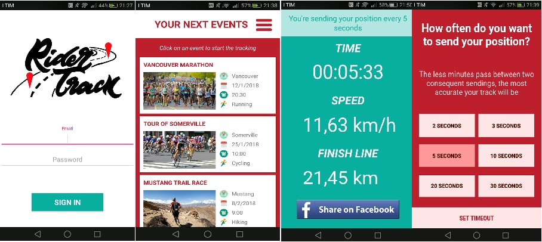
As a
default tracking source RiderTrack system assigns the android app which can be downloaded
here.
Edit profile
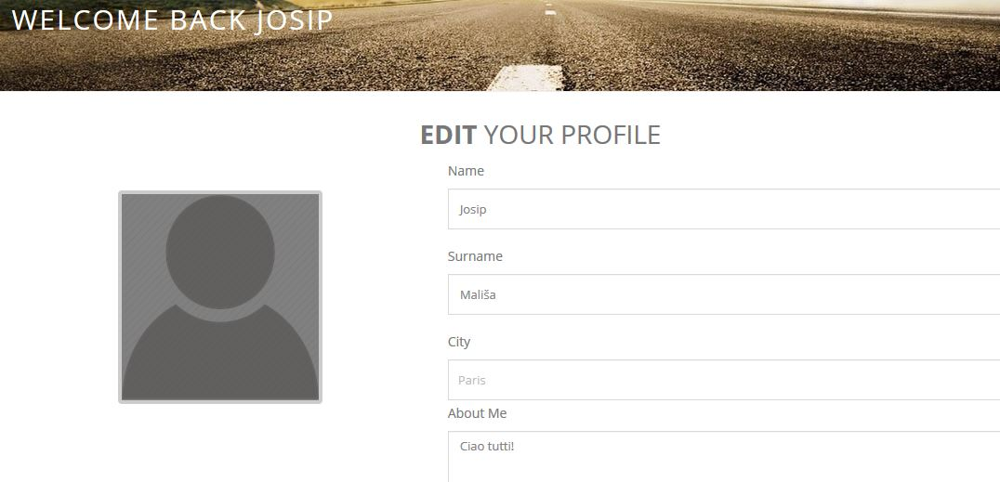
User that is currently logged in can edit his profile data.
Hovering over the avatar in the navigation bar user can choose between two options:
Image show user view after clicking on the first option.
Create event
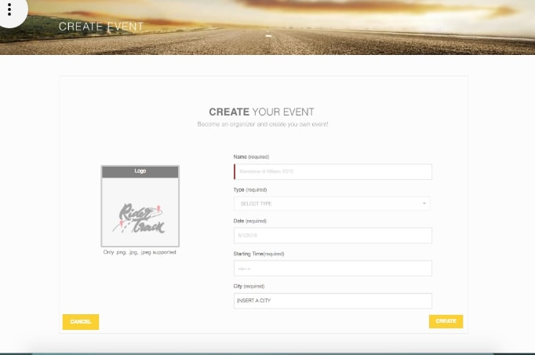
See the
list of the events hosted in RiderTrack just clicking on the "All events button" or using the search box!
Edit event
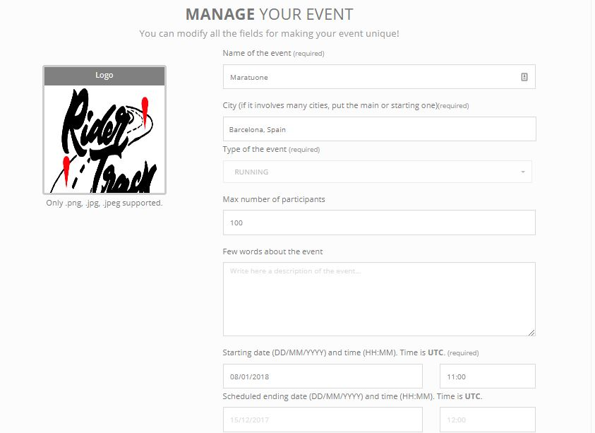
See the
list of the events hosted in RiderTrack just clicking on the "All events button" or using the search box!
Edit event route
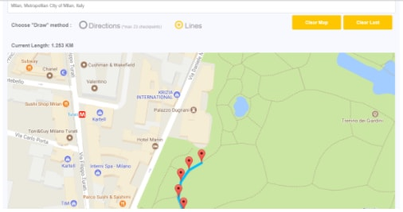
See the
list of the events hosted in RiderTrack just clicking on the "All events button" or using the search box!
Start/stop tracking
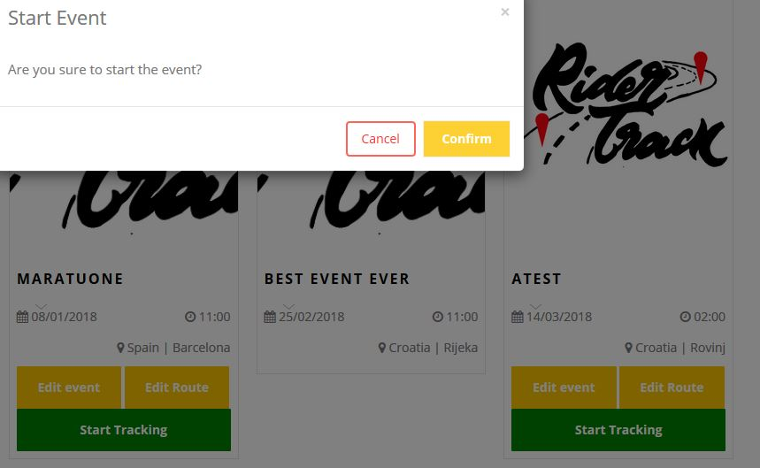
See the
list of the events hosted in RiderTrack just clicking on the "All events button" or using the search box!